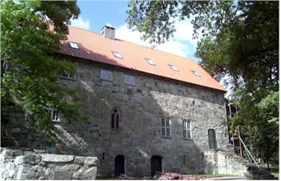
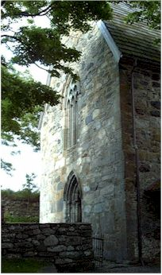
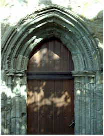
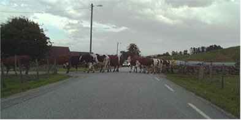

The Kloister from the side


I thought this was a very pretty door, you could just feel how old it was.

The countryside in the area

Then I went about a half mile down the road and ran into the cow procession pictured above. I haven't had to stop my car for a line of dairy cows since I left Adair County, Oklahoma!